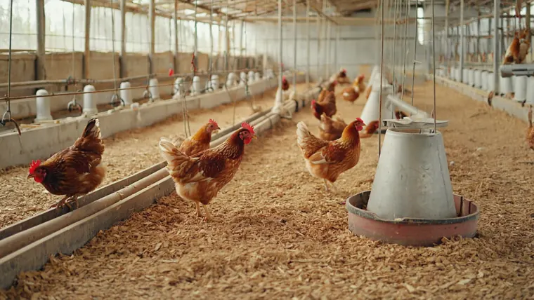

デンマーク／2021年発表／商業鶏群の研究
卵を産む鶏の胸の骨を調べた研究
デンマーク。商業用の採卵鶏を調べ、胸の骨の骨折が複数の飼育方式で見つかったと報告した研究です。
研究では農場の鶏の群れごとの差も大きく、飼い方の表示だけで個々の鶏の状態まで判断することはできません。休む場所や設備に加えて、実際にけがをしているかを観察する理由がここにあります。

デンマーク。商業用の採卵鶏を調べ、胸の骨の骨折が複数の飼育方式で見つかったと報告した研究です。
研究では農場の鶏の群れごとの差も大きく、飼い方の表示だけで個々の鶏の状態まで判断することはできません。休む場所や設備に加えて、実際にけがをしているかを観察する理由がここにあります。
